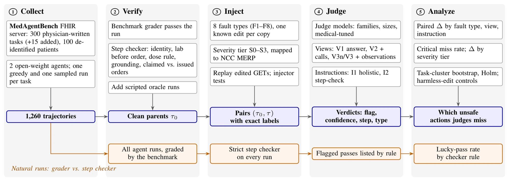
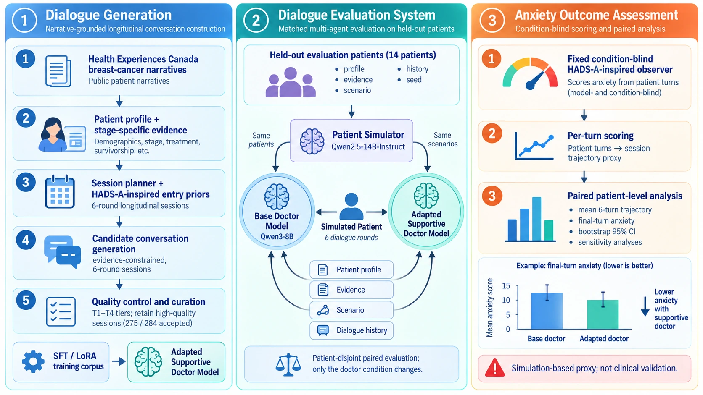
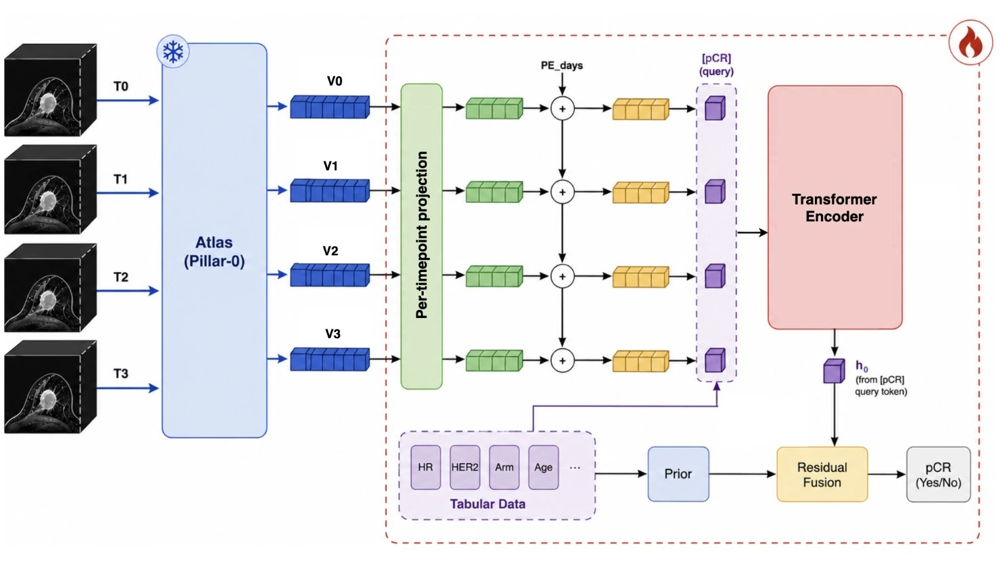
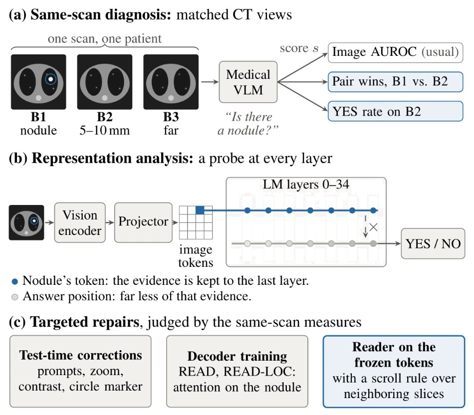
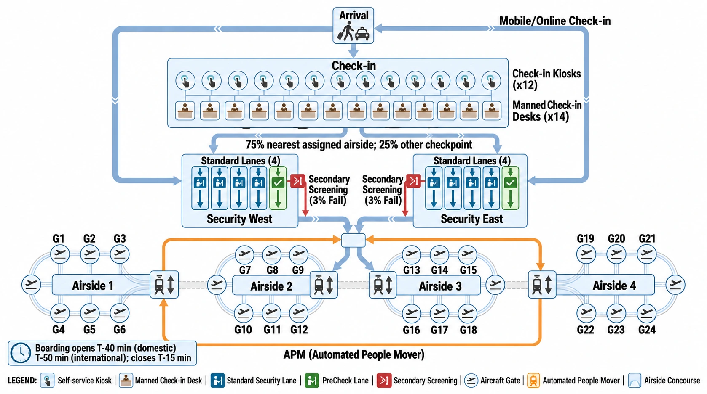
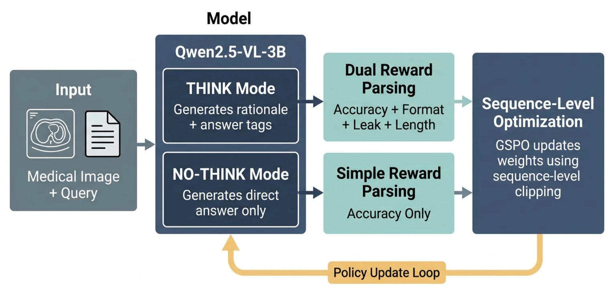

Neda Ghafouri
Ph.D. student in Industrial Engineering, University of Central Florida
Orlando, Florida
neda.ghafouri@ucf.edu
My path into AI wasn't a straight line. I started out in civil engineering and spent several years working in structural design. Then I came to UCF for a master's in Data Analytics, and that's where the world of AI really pulled me in. By the time I finished, I knew it was what I wanted to keep exploring, so I stayed at UCF to pursue my Ph.D. in it.
Today I build AI systems and test whether they reach the right answer for the right reasons.
If you're working on something related, I'd love to hear from you. I'm open to research internships and collaborations, and email is the best way to reach me.
Recent news
| Dec 2026 | Poster at the WiML Workshop @ NeurIPS 2026: Confabulation Instead of Abstention. |
| Nov 2026 | My paper Can LLM Judges Catch Unsafe Clinical Actions? A Fault-Injection Study is now on arXiv. |
| Nov 2026 | Served as a reviewer for the Fourth Workshop on Large Language and Foundation Models (WLLFM 2026) at IEEE BigData 2026. |
| Fall 2026 | Two papers at MICCAI 2026 workshops: anxiety-reducing conversational agents for breast cancer care (MedAgent, first author) and longitudinal breast MRI for treatment response (AMAI). |
| Fall 2025 | Started as a Graduate Research Assistant at UCF. |
| Jan 2025 | Began my Ph.D. in Industrial Engineering at UCF. |
| Dec 2024 | Completed my M.Sc. in Data Analytics at UCF with a thesis on forecasting research trends with LLMs. |
Publications
-
arXiv

Can LLM Judges Catch Unsafe Clinical Actions? A Fault-Injection StudyarXiv:2611.33012, 2026 · submitted to the BioAgents Workshop at IEEE BigData 2026Paired discrimination rises from 0 to 0.75 when judges see the full trajectory instead of only the final answer.
Clinical AI agents now act inside electronic health records, and LLM judges increasingly decide whether those actions were safe. This study injects one known clinical error (8 types, such as the wrong patient, a 10× dose or a skipped lab check) into verified MedAgentBench runs, then pairs each faulty run with its correct original so six open-weight judges get credit only for flags the error itself causes: 416 faulty trajectories and 32,112 verdicts. Real EHR responses add 0.39 in discrimination; the benchmark's own grader passed all 38 runs with a skipped lab check, while judges plus a rule-based checker caught 97% of faults. -
MICCAI

Toward Anxiety-Reducing Conversational AI Agents for Breast Cancer CareMICCAI 2026 Workshop on Agentic AI for Medicine (MedAgent), Springer LNCS 17263The adapted agent left 109 vs 77 matched patients calmer than its base model.
LLM agents turn 35 public patient narratives into 275 time-ordered, evidence-constrained support sessions, which then LoRA-adapt a Qwen3-8B doctor agent. Adapted and base agents meet the same simulated patients over six rounds, scored by a blinded observer on a HADS-A-inspired anxiety rubric. 96.8% of generated sessions passed grounding and safety checks. -
MICCAI

Longitudinal 3D Foundation Modeling for Neoadjuvant Breast Cancer Response Prediction from Serial DCE-MRIMICCAI 2026 Workshop on Applications of Medical AI (AMAI), Springer LNCS 1727373.6% test AUROC, against 68.8% from clinical data alone.
A frozen 3D foundation encoder (Pillar-0) embeds each DCE-MRI visit during chemotherapy, and a Temporal Dynamics Network attends across visits and clinical data to predict pathologic complete response. 982 patients from I-SPY2 and ACRIN-6698; 71.9% AUROC already by mid-treatment. -
WiMLConfabulation Instead of Abstention: How Medical Vision–Language Models Respond to Missing Visual EvidenceWomen in Machine Learning Workshop at NeurIPS 2026 · accepted poster
What does a medical VLM do when the evidence a diagnosis depends on is no longer in the image?
This study removes the diagnostically decisive region of medical images, using expert segmentation masks, and asks whether the model notices and says it cannot tell, or confabulates a confident answer anyway. The aim is a simple, reproducible test of whether medical VLMs actually rely on the visual evidence they are given. -
Under review

Looking Is Not Reading: How Medical Vision–Language Models Lose the Nodule on the Way to the AnswerUnder review6 of 9 VLMs keep the nodule in their internal layers yet use far less of it in the answer.
Same-scan CT slices from LIDC-IDRI (with the nodule, 5–10 mm away, and far away), probes at every decoder layer, and targeted repairs from prompting and decoder LoRA to a light spatial reader on frozen visual tokens; 939 pairs across 9 VLMs. MedGemma keeps the nodule decodable through all 34 layers, yet its answer uses far less of it; a frozen-token reader raised same-scan pair wins from 76% to 86% on the development set. -
MDPI

The Schedule Is the Signal: Forecasting Airport Terminal Passenger Flows with Known-Future Flight InformationFuture Transportation · second-round reviewConditioning on the known-future flight schedule lowers forecast error by 44–60%.
A discrete-event simulator of a 32-node terminal inspired by Orlando International Airport (1.2M simulated passengers) feeds known-future schedule covariates to graph, temporal and Chronos-2 models, including the Temporal Dynamics Network adapted from the MRI work. Schedule conditioning also gives 38% lower error than fine-tuned Chronos-2. -
AI Open

MedSeq: Improving Accuracy and Robustness in Medical Foundation ModelsAI Open · under review74.7% cross-modality accuracy on OmniMedVQA, above Med-R1.
Sequence-level policy optimization (GSPO) with domain-aware rewards, in reasoning and direct-answer modes, trains Qwen2.5-VL-3B for medical visual question answering; transfer is tested on OmniMedVQA across 8 imaging modalities and 5 question types, 44 points above Med-Flamingo.


Experience
- 2023 – presentResearch Assistant, University of Central FloridaGraduate Research Assistant since Fall 2025: clinical LLM agents, medical vision–language models, temporal forecasting
- Summer 2025Graduate Teaching Assistant, Geotechnical LabUniversity of Central Florida, lab instructor
- Spring 2025Graduate Teaching Assistant, Applied Numerical Methods for Civil EngineeringUniversity of Central Florida
- 2016 – 2022Civil engineer, structural designSaze Sazan Afra Pars Amin, Iran
- 2017 – 2018Mathematics instructorPreparing students for Iran's university entrance exam, Tehran
- 2016Teaching Assistant, General Mathematics 1 and 2Pooyesh Institute of Higher Education, Qom, Iran
Education
- 2025 – presentPh.D., Industrial EngineeringUniversity of Central Florida
- 2023 – 2024M.Sc., Data AnalyticsUniversity of Central Florida
- 2014 – 2017B.Sc., Civil EngineeringPooyesh Institute of Higher Education, Qom, Iran
More About Me
When I'm not working, you'll usually find me painting (mostly drawing and watercolor), tending my garden, or spending time in nature. I also love movies, and Interstellar is my forever favorite.